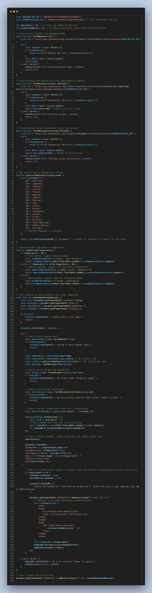

Dynamic Data Accumulation Project
Description of the Design Process
This project integrates weather and recipe APIs to provide an interactive experience. Users input a city name, and the system fetches the current weather for that location.
Based on the temperature, the system determines a suitable cuisine style and meal type for that region, then fetches a recipe matching these criteria.
As users explore different cities and recipes, the system accumulates random words from the instructions of each recipe. Once five searches are completed, the accumulated words are used to generate a poetic display, offering a creative interpretation of the cooking processes.
The design emphasizes both functionality and user engagement, combining dynamic data accumulation with a visually compelling interface.
Code Screenshot

Reflections on the Outcomes
The final design achieves the intended functionality of dynamically updating based on user inputs and culminates in a visually impactful display of accumulated data.
The use of animations and styled containers contributes to the user experience, making the interface intuitive and enjoyable.
Reflecting on the process, one significant takeaway is the importance of balancing aesthetics with performance, ensuring responsiveness without sacrificing visual appeal.
Website in Action

Live Website Link
Visit the Live Website
Reflections on the Outcomes
The project highlights the interplay between data and user interaction, showcasing how diverse APIs can work together to deliver a unique experience. The accumulation of random words from recipe instructions and their transformation into a poetic display underline the creative possibilities of such integrations.
Challenges included ensuring API compatibility, managing dynamic data visualization, and crafting an engaging interface. These hurdles were addressed iteratively, reinforcing the importance of testing and refining design elements.
Ultimately, the project successfully blends functionality with creativity, offering a user experience that is both practical and inspiring. The poetic result of accumulated words serves as a metaphor for the harmony of technology and art.